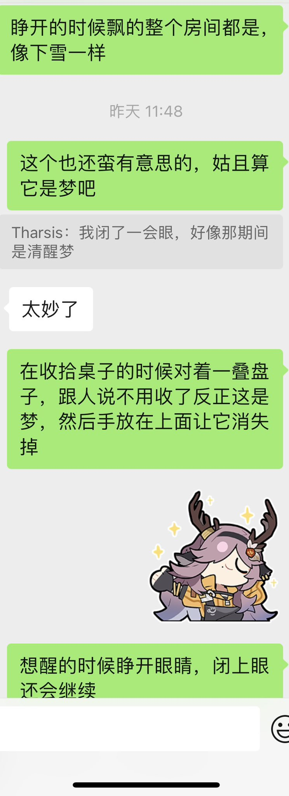

炽烈已极
@AnIncandescence
一次久远的唑吡坦医用剂量下0.5t的幻觉
后来还出现了看到天花板上的灯（关灯状态下）像ai作图合成的视频一样以很高的频率变换形态，以至于难以分别其本来的样子。还有躺下的视角整个房间剧烈的摇晃
近期，距离之前一年半后出现了第二次

炽烈已极
@AnIncandescence
@6thCuteK1tten @RXdruglab 两只大蜘蛛向我爬过来😭
还有sns医疗剂量下整个房间都是闪闪发亮的丝线，落在被子上一层，缠绕在手上，可以互动
因为像蚕丝一样细所以觉得感受不到重量也很合理